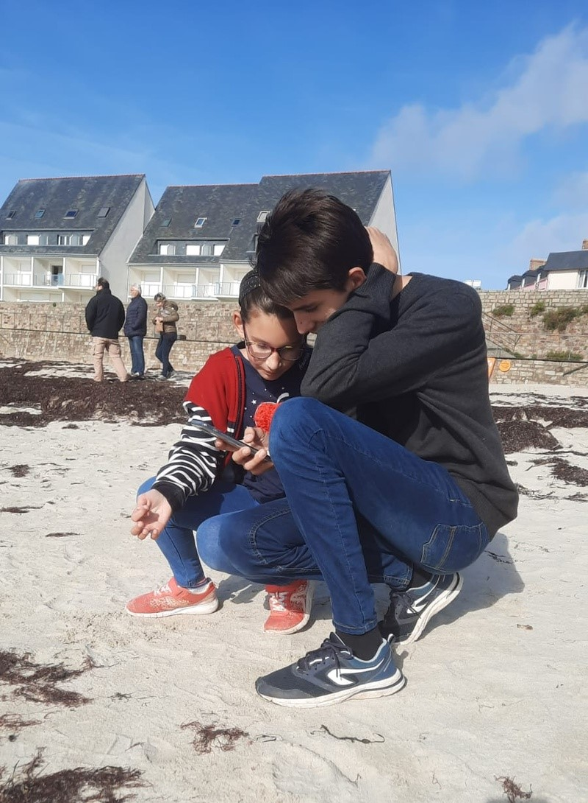
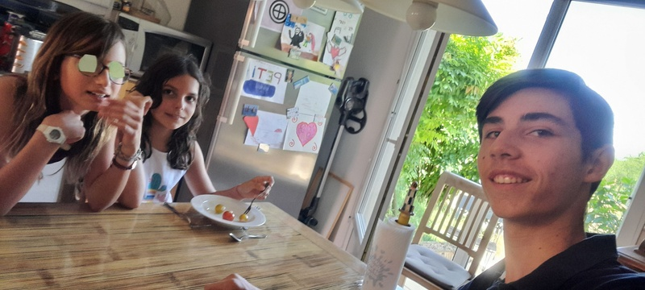
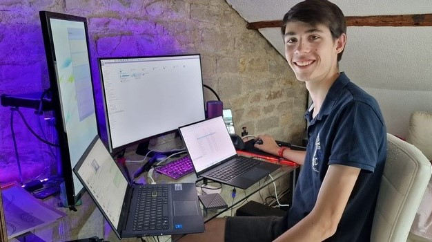

Étapes pour réaliser une vidéo
De la préparation au visionnage
1. Préparation
On commence par trouver et discuter les idées. Ensuite, on écrit tout et on prépare le tournage.
2. Tournage
Les scènes sont filmées, parfois sur fond vert pour des effets spéciaux. C'est la partie la plus longue.
3. Montage
Les clips sont assemblés, on ajoute des effets, sons et transitions pour finaliser la vidéo.